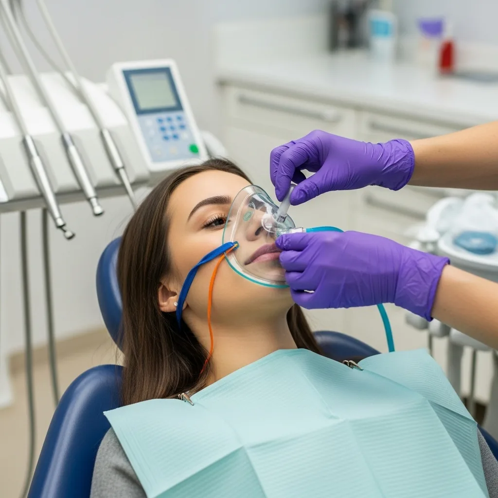

Sedation Dentistry
For patients who have been putting off care because of anxiety — we have safe, effective options that make the dentist genuinely comfortable.

Finally get the care you need — comfortably, safely, on your terms.
Up to 36% of Americans experience some level of dental anxiety. It's real, it's common, and it's one of the main reasons people avoid care until a small problem becomes a big one. Dr. Houshmand is certified in conscious sedation dentistry and has helped hundreds of anxious patients — including many who hadn't been to a dentist in a decade or more — finally get the care they needed.
What is conscious sedation?
Conscious sedation uses safe, medically supervised medication to help you feel deeply relaxed during your appointment. You remain awake and can respond to the dentist, but most patients remember very little about the procedure afterward. It's not general anesthesia — you breathe on your own throughout, and the effects wear off within a few hours.
What to expect
Medical history review
We review your complete medical and medication history to confirm which sedation option is safest and most effective for you.
Pre-appointment instructions
You receive clear written instructions for before your appointment — what to eat, what to avoid (typically nothing by mouth 6 hours before oral sedation), and what to arrange for your ride home. We call to confirm these details the day before your appointment.
Sedation administration
Nitrous is administered in-office. Oral sedation is taken at home before you arrive. Dr. Houshmand monitors your comfort and safety throughout.
Treatment & recovery
Your dental work is completed while you are comfortably relaxed. We ensure you are awake and oriented before you leave with your driver.
Frequently asked questions
We offer nitrous oxide (laughing gas) for mild anxiety — you remain fully alert and can drive afterward. For moderate-to-severe anxiety, we offer oral conscious sedation — a prescription medication taken before your appointment that produces deep relaxation. Dr. Houshmand is certified in conscious sedation and monitors you throughout.
Yes, when administered by a properly trained and certified provider. Dr. Houshmand has specialized training in conscious sedation and follows all safety protocols. We review your full medical history and medication list before recommending any sedation option.
No. Conscious sedation means you remain conscious and can follow simple instructions. You're deeply relaxed — most patients describe it as a dream-like state. General anesthesia (full unconsciousness) is not something we offer and is rarely needed for routine or restorative dental work.
Nitrous oxide wears off within minutes once removed. Oral conscious sedation typically produces grogginess for 4–6 hours after the appointment. You'll need a responsible adult to drive you home and stay with you for a few hours. Plan to rest for the remainder of the day.
Absolutely — in fact, this is one of the best uses of sedation. A patient who previously needed 6 appointments to complete restorative work can often complete the same treatment in 1–2 visits under sedation, because they're relaxed and the dentist can work more efficiently.
You are safe here
Board-certified sedation provider
Dr. Houshmand is certified in conscious sedation dentistry. Your safety is monitored throughout your appointment.
No judgment, ever
Many of our sedation patients have avoided dentistry for years due to fear. We've heard it before. We don't judge. We just help.
More done in fewer visits
Sedation often lets us complete more work in a single appointment, reducing the total number of visits you need.
Who is a candidate for sedation?
Most healthy adults with dental anxiety, a strong gag reflex, or complex treatment needs are good candidates. We review your medical history and discuss sedation options at your consultation. Sedation is not appropriate for all patients — we determine this together before any appointment.